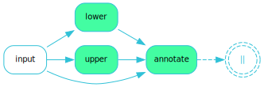

Home#
fluxus is a Python framework designed by BCG X to streamline the development of complex data processing pipelines (called flows), enabling users to quickly and efficiently build, test, and deploy highly concurrent workflows, making complex operations more manageable.
It is inspired by the data stream paradigm and is designed to be simple, expressive, and composable.
Introducing Flows#
A flow in fluxus represents a Directed Acyclic Graph (DAG) where each node performs a specific operation on the data. These nodes, called conduits, are the building blocks of a flow, and the data elements that move through the flow are referred to as products. The conduits are connected to ensure that products are processed and transferred correctly from one stage to another.
Within a fluxus flow, there are three main types of conduits:
Producers: These conduits generate or gather raw data from various sources such as databases, APIs, or sensors. They are the entry points of the flow, feeding initial products into the system.
Transformers: These conduits take the products from producers and transform them. This can involve filtering, aggregating, enriching, or changing the data to fit the required output or format.
Consumers: Consumers represent the endpoints of the flow. Each flow has exactly one consumer, which handles the final processed products. The consumer may store the data, display it in a user interface, or send it to another system.
A Simple Example#
Consider a simple flow that takes a greeting message, converts it to different cases (uppercase, lowercase), and then annotates each message with the case change that has been applied. The flow looks like this:
{kind=link}
With fluxus, we can define this flow as follows:
from fluxus.functional import step, passthrough, run
input_data = [
dict(greeting="Hello, World!"),
dict(greeting="Bonjour!"),
]
def lower(greeting: str):
# Convert the greeting to lowercase and keep track of the case change
yield dict(
greeting=greeting.lower(),
case="lower",
)
def upper(greeting: str):
# Convert the greeting to uppercase and keep track of the case change
yield dict(
greeting=greeting.upper(),
case="upper",
)
def annotate(greeting: str, case: str = "original"):
# Annotate the greeting with the case change; default to "original"
yield dict(greeting=f"{greeting!r} ({case})")
flow = (
step("input", input_data) # initial producer step
>> ( # 3 parallel steps: upper, lower, and passthrough
step("lower", lower)
& step("upper", upper)
& passthrough() # passthrough the original input data
)
>> step("annotate", annotate) # annotate all outputs
)
# Draw the flow diagram
flow.draw()
Note the passthrough() step in the flow. This step is a special type of conduit that
simply passes the input data along without modification. This is useful when you want to
run multiple transformations in parallel but still want to preserve the original data
for further processing.
You may have noted that the above code does not define a final consumer step. This is
because the run function automatically adds a consumer step to the end of the flow
to collect the final output. Custom consumers come into play when you start building
more customised flows using the object-oriented API instead of the simpler functional
API we are using here.
We run the flow with
result = run(flow)
This gives us the following output in result:
RunResult(
[
{
'input': {'greeting': 'Hello, World!'},
'lower': {'greeting': 'hello, world!', 'case': 'lower'},
'annotate': {'greeting': "'hello, world!' (lower)"}
},
{
'input': {'greeting': 'Bonjour!'},
'lower': {'greeting': 'bonjour!', 'case': 'lower'},
'annotate': {'greeting': "'bonjour!' (lower)"}
}
],
[
{
'input': {'greeting': 'Hello, World!'},
'upper': {'greeting': 'HELLO, WORLD!', 'case': 'upper'},
'annotate': {'greeting': "'HELLO, WORLD!' (original)"}
},
{
'input': {'greeting': 'Bonjour!'},
'upper': {'greeting': 'BONJOUR!', 'case': 'upper'},
'annotate': {'greeting': "'BONJOUR!' (original)"}
}
],
[
{
'input': {'greeting': 'Hello, World!'},
'annotate': {'greeting': "'Hello, World!' (original)"}
},
{
'input': {'greeting': 'Bonjour!'},
'annotate': {'greeting': "'Bonjour!' (original)"}
}
]
)
Or, as a pandas data frame by calling result.to_frame():
{kind=link}
Here’s what happened: The flow starts with a single input data item, which is then
passed along three parallel paths. Each path applies different transformations to the
data. The flow then combines the results of these transformations into a single output,
the RunResult.
Note that the result contains six outputs—one for each of the two input data items along each of the three paths through the flow. Also note that the results are grouped as separate lists for each path.
The run result not only gives us the final product of the annotate step but also the
inputs and intermediate products of the lower and upper steps. We refer to this
extended view of the flow results as the lineage of the flow.
For a more thorough introduction to FLUXUS, please visit our User Guide.
Why fluxus?#
The complexity of data processing tasks demands tools that streamline operations and ensure efficiency. fluxus addresses these needs by offering a structured approach to creating flows that handle various data sources and processing requirements. Key motivations for using fluxus include:
Organisation and Structure: fluxus offers a clear, structured approach to data processing, breaking down complex operations into manageable steps.
Maintainability: Its modular design allows individual components to be developed, tested, and debugged independently, simplifying maintenance and updates.
Reusability: Components in fluxus can be reused across different projects, reducing development time and effort.
Efficiency: By supporting concurrent processing, fluxus ensures optimal use of system resources, speeding up data processing tasks.
Ease of Use: fluxus provides a functional API that abstracts away the complexities of data processing, making it accessible to developers of all levels. More experienced users can also leverage the advanced features of its underlying object-oriented implementation for additional customisation and versatility (see User Guide for more details).
Concurrent Processing in fluxus#
A standout feature of fluxus is its support for concurrent processing, allowing multiple operations to run simultaneously. This is essential for:
Performance: Significantly reducing data processing time by executing multiple data streams or tasks in parallel.
Resource Utilisation: Maximising the use of system resources by distributing the processing load across multiple processes or threads.
fluxus leverages Python techniques such as threading and asynchronous programming to achieve concurrent processing.
By harnessing the capabilities of fluxus, developers can build efficient, scalable, and maintainable data processing systems that meet the demands of contemporary applications.
Getting started#
See the FLUXUS Documentation for a comprehensive User Guide, API reference, and more.
See Contributing or visit our detailed Contributor Guide for information on contributing.
We have an FAQ for common questions. For anything else, please reach out to artkit@bcg.com.
User Installation#
Install using pip:
pip install fluxus
or conda:
conda install -c bcgx fluxus
Optional dependencies#
To enable visualizations of flow diagrams, install GraphViz and ensure it is in your system’s PATH variable:
For MacOS and Linux users, instructions provided on GraphViz Downloads automatically add GraphViz to your path.
Windows users may need to manually add GraphViz to your PATH (see Simplified Windows installation procedure).
Run
dot -Vin Terminal or Command Prompt to verify installation.
Environment Setup#
Virtual environment#
We recommend working in a dedicated environment, e.g., using venv:
python -m venv fluxus
source fluxus/bin/activate
or conda:
conda env create -f environment.yml
conda activate fluxus
Contributing#
Contributions to fluxus are welcome and appreciated! Please see the Contributing section for information.
License#
This project is under the Apache License 2.0, allowing free use, modification, and distribution with added protections against patent litigation. See the LICENSE file for more details or visit Apache 2.0.